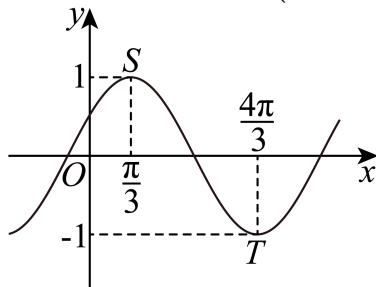
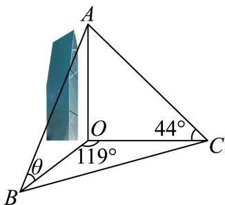

同角、诱导与倍角求值
先用象限或角范围定符号，再选同角、和差及倍角公式。
嘉定 · 第6题 ★★☆☆☆ · 教师预估
已知θ ∈ R，若 tanθ+cotθ=5 ，则sin 2θ =
奉贤 · 第6题 ★★☆☆☆ · 教师预估
已知θ是斜率为−1的直线的倾斜角，计算 sin(θ−2π)=
崇明 · 第4题 ★☆☆☆☆ · 教师预估
求直线x = −2与直线 3x−y+1=0 的夹角为 .
徐汇 · 第6题 ★★☆☆☆ · 教师预估
已知 cosθ=−53,θ∈(0,π) ，则 tan(θ−4π) 的值为
普陀 · 第14题 ★★☆☆☆ · 教师预估
设m ∈ R，在平面直角坐标系xOy中，角α的顶点在坐标原点，始边与x轴的正半轴重合，若角α的终边经过点 P(−3,m) ，且 sin(π+2α)>0 ，则角α属于（ ）
A. 第一象限
B. 第二象限
C. 第三象限
D. 第四象限
杨浦 · 第4题 ★☆☆☆☆ · 教师预估
已知 sinθ=53，则 cos2θ=______。
虹口 · 第3题 ★☆☆☆☆ · 教师预估
若 sinα=32 ，则 cos2α=
金山 · 第4题 ★☆☆☆☆ · 教师预估
若α为第二象限角，且 sinα=54 ，则tan α = .
长宁 · 第8题 ★★☆☆☆ · 教师预估
顶角为36∘的等腰三角形被称为黄金三角形，其底边和腰之比正好为黄金比 φ ，用黄金比 φ 表示cos36∘ =
闵行 · 第6题 ★★☆☆☆ · 教师预估
已知向量 a+=(3,4),b−=(cosθ,sinθ) ，若 a//b ， 则tanθ=
静安 · 第6题 ★★☆☆☆ · 教师预估
已知 ∣sin(4π−x)=53 ，则sin2x的值为
解析式、周期与相位性质
从最高最低点、周期或向量表达式恢复标准形式，平移后重新检验奇偶与单调。
崇明 · 第6题 ★☆☆☆☆ · 教师预估
函数 y=2sin(ωx−16π)（ω>0）的最小正周期是 π，则 ω=______。
杨浦 · 第3题 ★☆☆☆☆ · 教师预估
函数y = sin2x的最小正周期是
松江 · 第17题 ★★★☆☆ · 教师预估
本题资料或解析有待核事项，预览不可作为已审定成品。
已知函数 :y=Asin(2x+φ),A>0,0<φ<π: ，当 x=6π 时函数取得最大值4， i∃y=f(x)
(1) (6分)求函数 ⋅y=f(x) 的表达式；
(2) (8分)若数列 {an} 为等差数列， a2=f(0),a4=f(6π) Ebn=2an ，求数列 {bn} 的前n项和 Sn
浦东 · 第4题 ★☆☆☆☆ · 教师预估
若 f(x)=cos(3x)cosx+sin(3x)sinx ，则函数 y=f(x) 的最小正周期为
虹口 · 第14题 ★☆☆☆☆ · 教师预估
下列函数中为奇函数的是（ ）
A. y=x
B. y=x−2
C. y=sin(x+2π)
D. y=tan(x+π)
长宁 · 第17题 ★★★☆☆ · 教师预估
已知向量 m=(sinx+cosx,2sinx),n=(sinx−cosx,3cosx),f(x)=m⋅n.
(1) (6分)求函数y = f(x)的单调递减区间；
(2) (8分)若函数 y=f(x)−a 在区间 (0,2π) 上恰有2个零点，求实数a的取值范围
青浦 · 第13题 ★★☆☆☆ · 教师预估
本题资料或解析有待核事项，预览不可作为已审定成品。
“函数 f(x)=sin(x+φ) 为偶函数”是 Σ∗φ=2π ”的( )
A. 充分不必要条件
B. 必要不充分条件
C. 充分必要条件
D. 既不充分也不必要条件
静安 · 第8题 ★★★☆☆ · 教师预估
本题资料或解析有待核事项，预览不可作为已审定成品。
设某港口水的深度 y（米）关于时间 t（时）的函数近似满足 y=h+Asin(ωt+φ)。根据某一天的测量，港口水的深度在早上3点达到最大值18米，之后持续减少，并在上午9点达到最小值14米。则该港口水的深度 y（米）关于时间 t（时）的函数的近似表达式为 ______。
静安 · 第17题 ★★★☆☆ · 教师预估
本题资料或解析有待核事项，预览不可作为已审定成品。
已知向 Eq.Eq.=(cos(x+6π),sin(x+6π)),b=(cos(x+6π),−sin(x+6π)) ，记 f(x)=a⋅b
(1) (6分)求函数 y=f(x) 的最小正周期；
(2) (8分)若函数 [y=f(x+θ) （其中常数 θ∈(0,2π)) ）为奇函数，求θ的值
区间值域、解集与周期参数
区分周期与给定区间，统计零点或不等式解集中的指定解，注意端点与整数约束。
嘉定 · 第15题 ★★★☆☆ · 教师预估
已知关于x的不等式 ∣sin2x∣>cos x在区间 [0,2π] ]内有k个整数解，则k的值为（ ）
A. 3
B. 4
C. 5
D. 6
嘉定 · 第16题 ★★★★☆ · 教师预估
设数列 {an} 满足 an=sin(3nπ)+(−1)ncos(4nπ) ，记其前n项和为 Sn ，前n项积为 Tn ．则下列结论正确的是（ ）
A. 数列 {Sn} 和数列 {Tn} 均不是周期数列
B. 数列 {Sn} 是周期数列，数列 {Tn} 不是周期数列
C. 数列 {Sn} 不是周期数列，数列 {Tn} 是周期数列
D. 数列 {Sn} 和数列 {Tn} 均为周期数列
奉贤 · 第16题 ★★★☆☆ · 教师预估
若5π是函数 y′=cosnxsinn22000x 的一个周期，则正整数n所有可能取值个数是（ ）
A. 2
B. 3
C. 4
D. 9
宝山 · 第21题 ★★★★★ · 教师预估
本题资料或解析有待核事项，预览不可作为已审定成品。
定义在D上的可导函数y = f(x)，集合 A(k,m)={f(x)∣F(xi)=k,xi∈D,i=1,2,⋅⋅⋅,m,m 为正整数 } ， 其 中 F(x)=f(x)+f′(x) 称为f(x)的 自 和函数， xi 称为 y=f(x) 的固着点. 已知f(x)=aex+bx+csinx (a,b,c∈R)
(1) (4分)若a = c = 0, b = 2, D = R， f(x)∈A(1,m) ，求m的值及 y=f(x) 的固着点；
(2) (6分)若a = 0, b = 1, c = 1, D = [s, t](s > 0)，F(x)是f(x)的 自 和函数，且F(x)在D上是严格增函数，求t−s的最大值；
(3) (8分)若b = −1, c = 0, D = (0, +∞)， f(x)∈A(0,1) ，且t是y = f(x)的固着点，求a的取值范 围，并证明： 2a1<et<a21
崇明 · 第16题 ★★★★☆ · 教师预估
本题资料或解析有待核事项，预览不可作为已审定成品。
数列 {an} 是等差数列，周期数列 {bn} 满足 bn=cos(an)。若集合 X={x∣x=bn, n 是正整数} 中恰有三个元素，则数列 {bn} 的周期 T 的取值不可能是（ ）。
A. 4
B. 5
C. 6
D. 7
徐汇 · 第12题 ★★★★☆ · 教师预估
设实数 [ω>0, ，若 f(x)=sinωx 满足对任意 x1∈[0,π] ，都存在 x2∈[π,2π] ，使得 f(x1)+f(x2)=0 成立，则ω的最小值是
普陀 · 第10题 ★★★☆☆ · 教师预估
本地版本的第9、10题题号顺序存在冲突，当前题号尚待正式原卷核对。
设 kˉ≥1,k∈N,0<φ<2π ，函数 y=f(x) 的表达式为 f(x)=2sin(kx+φ) )，则对任意的实数a，皆有 {f(x)∣a<x<a+2}={f(x)∣x∈R} 成立的一个充分条件是
普陀 · 第18题 ★★★☆☆ · 教师预估
iXℏω>0, ，函数 y=f(x) 的表达式为 f(x)=cos(ωx−6π)
(1) (6W)#Πω=2 ，设 △ABC 的内角A,B,C的对边分别为 a,b,c f(C)=−23 ，且c2−a2−b2=4 ，求 △ABC 的面积.
(2) (8分)对任意的 x0∈R ，皆有 f(x0)≤f(3π) 成立，且该函数在区间 (6π,2π) 上不存在最小值，求函数 ⋅y=f(x) 在 x∈(34π,617π) 的单调区间.
松江 · 第12题 ★★★★☆ · 教师预估
本题资料或解析有待核事项，预览不可作为已审定成品。
设 a∈R，若函数
f(x)={sin(2πx−2πa),x2−2(a+1)x+a2+5,x<a,x≥a
在区间 (0,+∞) 内恰好有6个零点，则 a 的取值范围是________。
闵行 · 第15题 ★★★☆☆ · 教师预估
本地PDF题面与源解析实际使用的最值条件不一致；未擅自补条件，暂不作为已审定练习。
已知函数 y=cos(6πx+3π) 在区间 [a,a+9] 上既有最大值又有最小值 −1，则关于实数 a 的取值，以下不可能的是（ ）。
A. 2024
B. 2025
C. 2026
D. 2027
黄浦 · 第12题 ★★★★☆ · 教师预估
本题资料或解析有待核事项，预览不可作为已审定成品。
设a、b为常数， f(x)=∣a+sinx∣+∣a−sinx∣ ，若对任意的 ∣b∈(1,2) ，函数 y˙=f(x)−b 在区间[0,2π] 上恰有4个零点，则a的取值范围是
正余弦定理、面积与外接圆
在角边关系中切换正弦定理、余弦定理和面积公式，三角形角范围要保留。
奉贤 · 第7题 ★★★☆☆ · 教师预估
已知 ΔABC, A, B, C} 成等差数列且sinA、sinB、sinC成等比数列”是 ∗ΔABC 是正三角形”的条件
宝山 · 第9题 ★★☆☆☆ · 教师预估
已知 △ABC 中， AB=AC=4,∠BAC=32π ，点D在线段BC上，且 S△ACD=2S△ABD ，则AB⋅AD 的值为
崇明 · 第8题 ★★☆☆☆ · 教师预估
在 △ABCF 中，若 ic=3,C=3π ，其面积为 3, ，则a + b =
崇明 · 第11题 ★★★☆☆ · 教师预估
本题资料或解析有待核事项，预览不可作为已审定成品。
已知双曲线 x2−b2y2=1(b>0) 的左、右焦点为 F1,F2 ，以O为顶点， F2 为焦点作抛物线交双曲线于P，且 ∠PF1F2=45∘ ，则 ∣b2=∣
杨浦 · 第13题 ★★☆☆☆ · 教师预估
△ABC中， sin¨A=sinB′ ”是“A = B”的（ ）条件.
A. 充分非必要
B. 必要非充分
C. 充要
D. 既非充分也非必要
虹口 · 第7题 ★★☆☆☆ · 教师预估
本题资料或解析有待核事项，预览不可作为已审定成品。
若△ABC的三条边的长分别为4、5、6，则△ABC的外接圆面积为 .（结果保留π）
长宁 · 第10题 ★★★☆☆ · 教师预估
已知点D、E分别是三角形ABC的边AC、BC的中点，且 AE=2,BD=3 ，则三角形ABC的面积的取值范围是
闵行 · 第18题 ★★★★☆ · 教师预估
已知 f(x)=sin(ωx+φ)(ω>0,0<φ<π) ，函数 y=f(x) 的部分图像如图所示，图中最高点S(3π,1) ，最低点 T(34π,−1)

(1) (6分)求函数 y=f(x) 的解析式；
(2) (8分)若 △ABC 的内角A,B,C所对的边分别为 ∣a,b,c, 若 A=B,f(A)=f(B),c=2 ，求 △ABCH 积的取值范围
青浦 · 第6题 ★☆☆☆☆ · 教师预估
已知△ABC的角A、B、C对应边长分别为 a=4,b=5,c=6 ，则A = .
黄浦 · 第4题 ★☆☆☆☆ · 教师预估
在 △ABC∣ 中，若 A=45∘ B=30∘ a=26 ，则 ∣b=
辅助角、单位圆与三角最值
将三角组合、单位圆上的数量积或面积表达式转化，最值须满足几何约束。
杨浦 · 第15题 ★★★☆☆ · 教师预估
本题资料或解析有待核事项，预览不可作为已审定成品。
已知 、 、 是单位圆上的三个点，若 AB∣=2 ，则 AB⋅BC 的最大值为（ ）.
A. 2
B. 1+22
C. 2+1
D. 2−1
虹口 · 第18题 ★★★☆☆ · 教师预估
本题资料或解析有待核事项，预览不可作为已审定成品。
已知函数 y=f(x) 的表达式为 ∣f(x)=2x,x∈R
(1) (6分)解不等式： log2[f(x)−1]+log2[f(x)]≤1 ；
(2) (8分)若存在实数 x0∈[0,2π] ，使得 f(msinx0),f(2+sin2x0),f(mcosx0) 成等比数列，求实数m的最小值.
金山 · 第7题 ★★☆☆☆ · 教师预估
已知圆锥底面半径为1，高为 3, ，则过圆锥母线的截面面积的最大值为
金山 · 第16题 ★★★★☆ · 教师预估
本题资料或解析有待核事项，预览不可作为已审定成品。
已知点A (x1,y1) 在圆 x2+y2=9. 上，点 B(x2,y2) 在圆 x2+y2=12 上，且
x1x2+y1y2=x1+x2−1 ,O为坐标原点.对于以下两个命题，判断正确的是（ ）
①在坐标平面内存在点P，使得 AP⊥BP 恒成立；
②三角形OAB面积的最小值为 22
A. ①是真命题，②是真命题
B. ①是假命题，②是真命题
C. ①是真命题，②是假命题
D. ①是假命题，②是假命题
青浦 · 第2题 ★☆☆☆☆ · 教师预估
函数 y=2sinx−3cosx 的值域是
黄浦 · 第6题 ★★☆☆☆ · 教师预估
函数 f(x)=3sinx+sin(2π+x) 的最大值是
测量、方向与几何建模
将仰角、方向角、投影或折叠条件转为可计算三角形，再进行距离和最值研究。
奉贤 · 第11题 ★★☆☆☆ · 教师预估
中企联合大厦是奉贤区的第一高楼，是奉贤美奉贤强的一个缩影．某数学建模兴趣小组的同学们去实地进行测量，经过多次的测量，最终在平行于地面的同一水平面上选取三个点：点B、点C、点O作为测量基点．设大厦的最高点为A，在点B处测得点A的仰角为 ∠ABO=θ=71.5∘ ，在点C处测得点A的仰角为 ∠ACO=44∘ ，又测得 BC=221 米， ∠BOC=119∘ ，（见图）．现作出以下几个假设：
①直线AO垂直于平面OBC；
②平面OBC到地面的距离等于测角仪高度，在计算过程中测角仪高度忽略不计；
③其它次要因素等忽略不计．根据以上信息估算奉贤第一高楼的高度约

宝山 · 第20题 ★★★★☆ · 教师预估
本题资料或解析有待核事项，预览不可作为已审定成品。

已知双曲线 C:x2−3y2=1,F1 、 F2 分别是其左、右焦点，直线l与双曲线C的右支交于A、B两点.
(1) (4分)当直线l过点 F2 ，且 ∣AB∣=6H ，求 △ABF1 的周长；
(2) (6分)已知点N (−2, 3)，若直线AN、BN的斜率之和为0，且 tan∠ANB=34 ，当AN、BN分别与y轴交于点R、S时，求 △RSN 的面积；
(3) (8分)已知直线l过点F2，P是双曲线C上一点且位于第一象限，且满足− F2 OQ=2OP 的点Q在线段AB上，若 AB=2QF2 ，求点P的坐标.
徐汇 · 第11题 ★★★★☆ · 教师预估
本题资料或解析有待核事项，预览不可作为已审定成品。
如图，某处有一块圆心角为 32π♯ 的扇形绿地AOB，扇形的半径为20米，AB是一条原有的人行直路，由于工程建设需要，现要在绿地中建一条直路 ，以便在图中阴影部分区域分类堆放物料.为了尽量减少对绿地的破坏（不计路宽），则原直路AB与新直路OC的交叉点D到O的距离为米.

杨浦 · 第10题 ★★★☆☆ · 教师预估
本题资料或解析有待核事项，预览不可作为已审定成品。
如图，点D､E分别是直角三角形ABC的边AB､AC上的点，斜边 AC=E 扇形的弧DE相切，已知AC=4,BC=2 ，则阴影部分绕直线AB旋转一周所形成的几何体的体积为

松江 · 第8题 ★★☆☆☆ · 教师预估
在定向越野活动中，测得甲在乙北偏东80∘的方向，甲乙两人间的距离为2km，丙在乙北偏西40∘的方向，甲丙两人间的距离为 7km ，则乙丙两人间的距离为 km.
浦东 · 第10题 ★★★☆☆ · 教师预估
本题资料或解析有待核事项，预览不可作为已审定成品。

如图，某建筑物OP垂直于地面，从地面点A处测得建筑物顶部P的仰角为30∘，从地面点B处测得建筑物顶部P的仰角为 45∘ ，已知A、B相距100米， ∠AOB=60∘ ，则该建筑物 OP 高度约为米．（保留一位小数）
金山 · 第11题 ★★★★☆ · 教师预估
如图，现对某景区一长 AB=600m ，宽 AD=360m 的矩形空地进行建设.规划在边AB,AD上分别取点M,N修建人行步道（不考虑宽度），且满足点A关于步道MN的对称点E在边DC上.在△AMN内种植花卉，在△EMN内搭建娱乐设施，其余区域规划为露营区，则人行步道MN的最短距离为m.（结果精确到1m）

闵行 · 第11题 ★★★☆☆ · 教师预估
已知某星球的球心为F，半径为R，该星球的卫星的运行轨道是以F为一个焦点的椭圆，该椭圆的离心率为 53 ，卫星运行过程中离该星球表面最近的距离为R，若当卫星处于某位置时，用卫星上的光学仪器观测该星球，把光学仪器的镜头与星球表面被观测点的连线称为视线，任意两条视线所成的最大夹角称为张角，则卫星运行过程中张角的最小值为 ．（精确到0.1°）
静安 · 第12题 ★★★★☆ · 教师预估
在边长为1的正三角形ABC的边AB、AC上分别取D、E两点，若沿线段DE折叠该三角形时，顶点A恰好落在边BC上．则线段AD的长度的最小值为
三角函数的导数恒等关系
由互导关系构造恒等量和唯一性证明；保留完整函数综合题。
青浦 · 第21题 ★★★★★ · 教师预估
本题资料或解析有待核事项，预览不可作为已审定成品。
函数的导函数有很多有趣的性质，例如：函数y = c（实数c为常数）的导函数为y = 0；反之，若函数 ⟨y=Φ(x) 的导函数为Φ′(x) = 0，则Φ(x) = c（实数c为常数）.已知函数 y=f(x) 与 y=g(x) 定义域都是R，导函数分别为y = f′(x)和 ∣y=g′(x) .若 f′(x)=f(x) ，则称 ?y=f(x) 是“自导函数”；落f′(x)=g(x) 且g′(x) = −f(x)，则称y = f(x)与y = g(x)是“共轭互导函数”.
(1) (4分)请判断函数 y˙=eax+b(a,b∈R,a=0) 是否是“自导函数”，并说明理由；
(2) (6分)若函数 {y=f(x) 是“自导函数”，且满足f(0) = 1，求证： f(x)f(−x)=1
(3) (8分)若函数 y˙=f(x)÷y=g(x) 是“共轭互导函数”，满足f(0) = 0, g(0) = 1，求证：
f2(x)+g2(x)=1 .进而证明f(x) = sin x且g(x) = cos x.